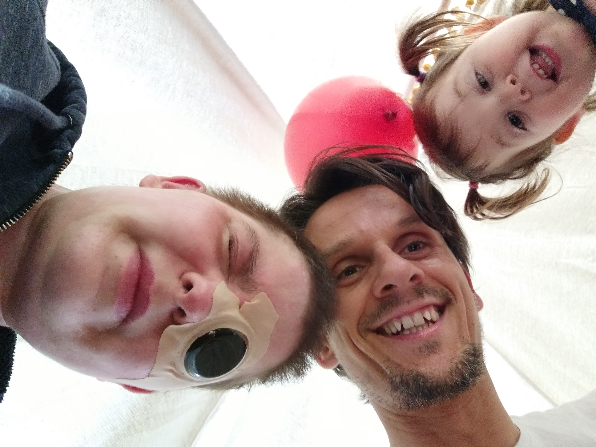
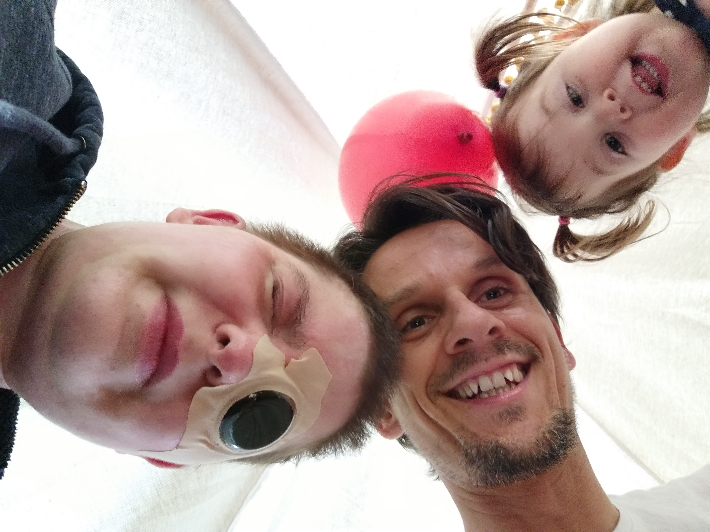

Before Everything Changed
Before everything changed, I lived a happy life. I had a loving husband, a beautiful two-year-old daughter, and although I had struggled with anxiety and panic attacks, they were under control. I just wanted to keep it that way—for myself and especially for my daughter. I never wanted her to witness one of my attacks.
In 2022, during a particularly intense panic episode, I was taken to the hospital. At that time, hospitals were still overwhelmed from the COVID-19 pandemic, especially the ones in Esch and Niederkorn, Luxembourg. After a short stay in Niederkorn Hospital, I decided to seek better care from a psychiatrist who had treated me for years at CHL Strassen. There, I was prescribed Lamictal (Lamotrigine) to manage the anxiety.
Soon after starting the medication, I began developing strange symptoms—pain in my eyes, red spots on my body, and difficulty swallowing. Slowly, without even realizing it, I began losing touch with reality.
My memories from that time are fractured. I remember not being able to see, feeling confused, and being examined by many doctors. I was transferred by helicopter from CHL Strassen to the burn unit in Metz, France, as my condition deteriorated rapidly.
There, the doctors stopped all my medications to identify the cause. They discovered that Lamictal had triggered a rare and severe allergic reaction: Lyell syndrome, also known as Toxic Epidermal Necrolysis (TEN)—a life-threatening condition involving widespread blistering and peeling of the skin and mucous membranes.
In my case, 85% of my body was affected. My knees, feet, and hands were the least affected, but my nail beds were permanently damaged, and I no longer have normal nails. I was in excruciating pain. My husband was told my chances of survival were minimal—essentially 50/50.
The ICU: Living a Nightmare
Even though my body was shutting down, my mind remained terrifyingly active. I experienced hallucinations, confusion, and vivid delusions. I believed that my husband and daughter had been murdered and that the nurses were planning to do the same to me.
This was caused by ICU delirium, which can happen due to high fever, severe inflammation, strong medications (like opioids and sedatives), sleep deprivation, and total sensory overload. It wasn’t mental illness—it was my brain trying to make sense of a body in extreme distress.
I was terrified of dying. I remember asking every doctor I saw if I was going to die, and receiving hesitant, uncertain answers. I didn’t believe any of the visits I received were real.
I was confused, blind, and couldn’t understand why I had tubes in my mouth and nose, why my hair had been shaved off, or why I was covered in bandages. I couldn’t walk. The pain and fear were all-consuming.
Finding Reality Again
After about a month, something shifted. My brother visited and I asked him a personal question that only he would know the answer to. When he responded correctly, I knew he was real—and slowly, reality began to return.
I came to understand that something catastrophic had happened to me. My husband was by my side, relieved that I had survived. I was transferred back to CHL in Luxembourg, where I remained hospitalized for seven more months.
I had lost nearly all my vision and was told I would likely never see again. My right eye had developed a severe ulcer, and inflammation was widespread. My mucous membranes were gone, making eating extremely difficult. I fell into a deep depression.
Learning to Live Again
While still in the hospital, I began Orientation and Mobility (O&M) training to help me navigate the world without vision. I learned to use a white cane, build mental maps, use landmarks and tactile cues, and move safely indoors and outdoors. My husband was trained alongside me to help guide me.
But emotionally, I was still in denial and deeply depressed. My appearance had changed drastically, and we decided it was best not to have my daughter visit me until I improved. It was heartbreaking—I missed so many months of her life.
Eventually, thanks to a skilled ophthalmologist at CHL Luxembourg, I was referred to the CHU hospital in Liège, Belgium, where I met a corneal specialist. After trying many options, they fitted me with scleral lenses—custom lenses designed for people with severe corneal damage like mine.
The first time I put them in, I could actually see something again. It wasn’t much, but it was more than I’d had in months.
Returning Home
After seven long months in the hospital, I was finally discharged and returned home. But the reality of being home wasn’t the relief I had imagined — it was overwhelming. I was physically weak, emotionally shattered, and still almost completely blind. My body was still raw from burns. My skin was extremely fragile, tight, and painful. I couldn’t tolerate sunlight at all and had to wear very dark glasses indoors and outdoors. I moved around the house mostly by touch, using my hands to guide myself.
Thankfully, a family member came to live with us and care for me full-time. My husband, who had already carried the weight of my hospitalization, now had to adjust to being a caregiver while also parenting our young daughter. We were all walking into an unknown future, trying to rebuild a version of life we didn’t choose.
Emotionally, I was still deep in depression and grief. I felt disconnected from myself, my surroundings, and the people I loved. I couldn’t look in the mirror. I struggled with my new appearance — scarred, fragile, unfamiliar. My vision loss made me feel helpless, like a stranger in my own home. Worst of all was the separation from my daughter. Because of my physical and emotional state, we had decided she shouldn’t see me until I looked and felt more like myself. I lost precious moments of her growth that I’ll never get back.
Despite the darkness, I tried to create small rituals to ground myself. I slept most of the day, but when I had the energy, I would lie down and listen to comedy movies or light shows just to hear laughter again. I wasn’t watching — I was just listening — but it helped lift the fog, even a little.
Bit by bit, I started to adjust to my home environment. I learned where things were by memory and touch. I began helping with tiny household tasks. I learned how to recognize the good and bad days for my eyes, and how to respond to pain flare-ups or sudden swelling. My world was small, but I was learning to survive inside it.
Then came the first glimmer of hope: the scleral lenses. During a follow-up at CHU in Liège, my ophthalmologist introduced me to these specialized lenses, often used for people who’ve suffered corneal damage from Lyell syndrome or have no tear production, like me. The first time I wore them, I was able to open my eyes without intense pain. I could see something — not clearly, not far, but something. For the first time since this all began, the world came back into focus, even if just for a moment.
This tiny improvement was life-changing. I started wearing the lenses a few hours at a time — two hours, then four, then six — always accompanied by someone, but increasingly independent. With them, I could move around more confidently, reconnect with my daughter, and start to imagine a future again.
The pain was still there. The scars still covered my body. I was still blind without the lenses. But for the first time, I felt the beginning of a new version of me forming — not the same person I was before, but someone who had survived the unthinkable and was learning, step by step, how to live again.
Living Today
Today, I live a very different life than I did before—but it is still my life, and I choose to live it fully.
My vision remains severely limited. It fluctuates—some days are slightly better than others, but the inflammation is constant. I have no natural tear production, so I must put eye drops in every 3 minutes, sometimes even more often. It’s relentless. People often see the drops running down my face and ask gently, “Are you crying?” I usually just smile, but it’s hard to explain that no, I’m not crying—this is just how I have to live now.
My eyes are always red, irritated, and swollen. I wear dark glasses to protect myself from even moderate light. Without them, the world is a painful blur. My hands—while still functional—are visibly scarred, and my nail beds are permanently damaged, leaving me without normal nails. When I go out in public, people sometimes stare. I see it. I feel it. It. It hurts—but I keep going.
The scars on my skin are scattered everywhere—on my arms, legs, chest, neck. They’ve faded over time thanks to laser treatments, but they are still there, still reminders. I’ve gained some weight due to inactivity, stress, and medications. But I now go to the gym every day, not just for my body, but for my mind. It’s a space where I remind myself that I am still strong.
I’ve learned how to eat slowly to avoid choking, since I permanently lost much of my mucous membranes. I’ve developed a “survival routine”—eye drops, special foods, protective glasses, medications, light management. My vision will likely never improve beyond what I have now. My eyes will stay chronically inflamed. But still— I can see something. I can see my daughter. I can see my husband. I can see the world—imperfectly, but enough.
I’ve also found a new passion: metalsmithing. With the limited vision I have—about 10 cm of functional sight—I’ve started learning to create jewelry in silver. It’s slow, precise, and deeply satisfying. It gives me something of my own. Something beautiful I can create with my hands, despite all they’ve been through.
No, life isn’t what it was. It’s hard. But I’m here. I survived. I’m still learning, still growing, still trying to build something meaningful from what was nearly taken from me.
Why I’m Telling My Story
I’m not sharing this story for pity or praise. I’m sharing it because this should never happen to anyone.
I want people to know the risks— Lamotrigine, the medication prescribed to help with my anxiety, nearly killed me. Some side effects can be devastating. But if this happened to you—or someone you love— you’re not alone.
There is help. There is hope. And even after unimaginable pain, there can still be life.
Thank you to my family, especially my husband, who stood by me every step of the way. Thank you to the burn unit in Metz, the doctors at CHL Strassen, and the specialists at CHU Liège—you gave me a second chance.
Images from My Journey
 
